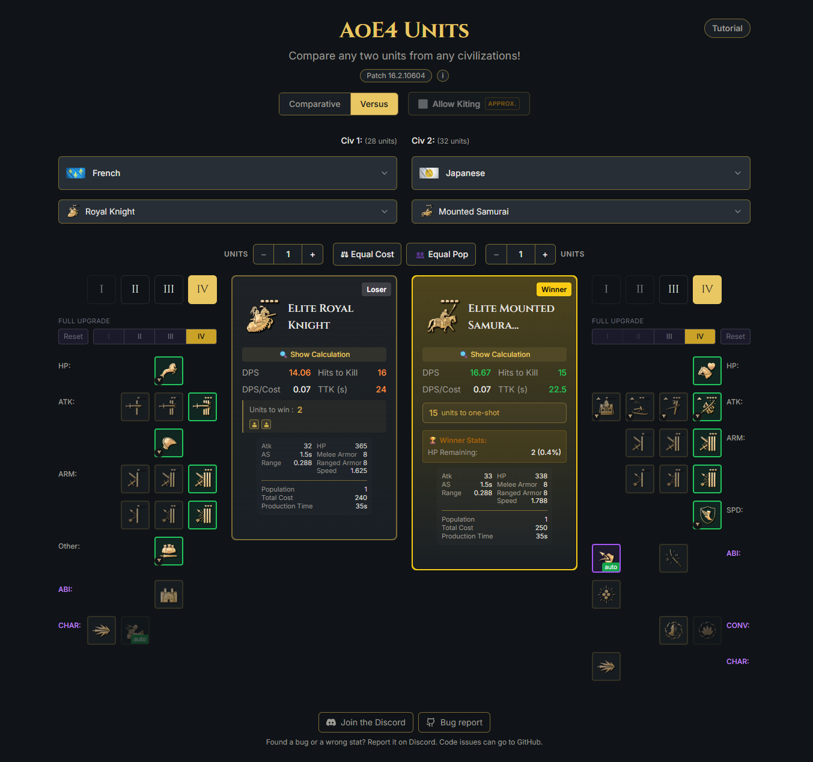

Personal project · 2025–now
AoE4 Units
An educational combat-analysis tool for Age of Empires IV: compare any two units side by side with a full battle simulation, on the web or live on Twitch.

About the project
I've been playing the Age of Empires series for as long as I can remember, and AoE4 is the one I keep coming back to. Like a lot of players I kept hitting the same wall: who actually wins a fight is rarely obvious from the stat card. Melee and ranged armor shave a flat amount off every hit, many units deal bonus damage against a whole class (spearmen against cavalry, for instance), and each Age plus every Blacksmith upgrade shifts the numbers again. The community had spreadsheets and wikis, but nothing that just answered the question in a couple of clicks, so I built it.
AoE4 Units settles the matchup by simulating the fight itself: pick any two units, set their Age and upgrades, and watch it resolve down to who is left standing. The numbers are never hand-entered: a data-driven pipeline rebuilds every unit's stats from the game's own data, with a layer of hand-written corrections for the special cases, so when a patch lands the tool follows it instead of going stale. The whole thing started as a personal project and grew into something the game's competitive community actually uses; the simulation engine is shared code, reused unchanged in a companion Twitch extension so viewers can run their own matchups live on the stream overlay.
Main features
-
Any unit, any upgrade
Side-by-side comparison of any two units, at any Age, with technologies and abilities toggled on and off.
-
A real fight, not a stat sheet
Attack cadence, melee and ranged armor, bonus damage, charges and healing all play out to a time-to-kill and a survivor.
-
Army battles
Scale past 1v1 to N-vs-M, balanced by equal cost or equal population, with focus-fire and attack-move engagement models.
-
Kiting and spacing
Ranged units kite; an approach phase gives archers their free shots while melee closes the gap.
-
Patch-proof data
Every unit is rebuilt from the game's data each patch, with a correction layer for the special cases.
-
Live on Twitch
A companion extension runs matchups on the channel overlay, sharing the same engine as the site.
Tech stack
A React 18 and TypeScript single-page app, styled with TailwindCSS and shadcn/ui, animated with Framer Motion, bundled by Vite. The combat logic sits in isolated modules reused by both the site and the Twitch extension. Unit pages are pre-rendered to static HTML with vite-react-ssg, so every unit gets its own indexable page for search.